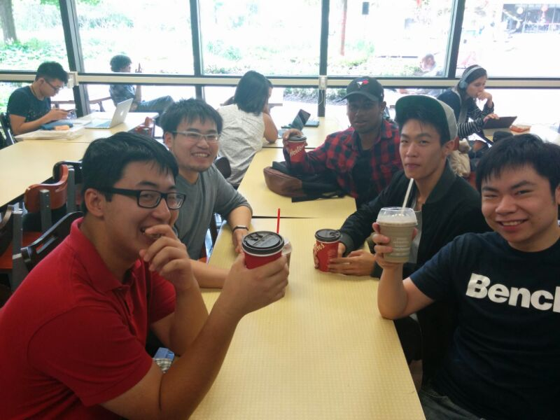

Brandon Chow
Hello, I'm Brandon and I’m a 4th year Computer Science student at the University of Toronto, at Scarborough. I've worked as a Test Developer at Wind River Systems and as a Software Developer at ShawCor in the past as part of the co-op program at UTSC. My more recent term was at ShawCor, where I worked for 8 months as part of the UTSC co-op program followed by another 8 months of part time work, independent from UTSC and concurrent to my studies. At the moment, I am focusing on my studies and I plan to graduate in the Winter 2016 term. After university, I plan to take a short, well earned, vacation where I plan to travel as well as work on personal projects. I look forward to working in team PD!
Jason Zheng
I’m a 3rd year Computer Science student currently in co-op. I have had a one year co op at CaseWare Int. as a tool developer, test writer, and framework developer. I’ve developed experience in agile development, issue tracking, and git branching model during my stay at CaseWare. I’m well versed in C#, Java, Scala, Javascript, SQL and PHP, all used during my time at CaseWare and during personal projects. I’m however inexperienced in the design aspect of development. I hope to learn how to properly plan and create efficient and powerful software with my team mates.
Kenny Lam
I am a 3rd year student currently enrolled in the Computer Science Specialist program at the University of Toronto Scarborough. I had previously worked at CIBC as a Test Analyst for an 8 month co-op term where I received the “CIBC Technology Co-op Program Achievement Award” for exceptional work ethic and management skills. Throughout the years I have worked on several projects including a virtual-reality application used as a medical assessment tool to study patients with schizophrenia. While working on these projects, I had developed strong skills in several programming languages such as C, C++, C#, Java, Python, and HLSL. During my free time, I enjoy writing shaders and image post-processing effects that take advantage of the GPU's power.
Wilfred Wong
Hi, I’m a 3rd year Student currently enrolled in Computer Science at the University of Toronto. For the past three years I’ve been studying and working hard towards my goal of becoming a software engineer. During this time I’ve worked on many projects from websites, databases, software and mobile applications. I’ve developed strong skills in many different languages such as C, Java, and HTML. Whether or not I was working alone or working in a team environment I have always learned something new and challenged those around me. Alongside developing my technical and mechanical skills I also have experience with customer service. As a supervisor for a private tennis club, I established many important relationships and resolved many difficult situations. Outside of work, I partake in different hobbies such as Basketball, Traveling and Music. I am excited to work alongside my fellow teammates and I am confident that we will do our very best.
Daniel Persaud
Hi, I'm Daniel - A third year Computer Science specialist at UTSC. I've spent the past three years indulging my passion for technology both at the University of Toronto Scarborough and on my own time. At UTSC I've been rapidly advancing my development skills by developing course projects such as Android Apps., java programs, etc., and side projects like my website, and several small GML games that I've created (see my GITHub). In my personal life I'm a tech. enthusiast that's interested in CPU&GPU benchmarking, systembuilding (especially gaming PC's), and various DIY Projects (like a glowing wall mounted water-cooled bare-bone PC). I look forward to seeing how my skill set and passion for technology advance the projects we work on.
